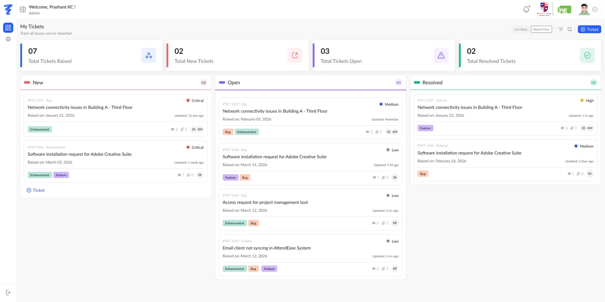
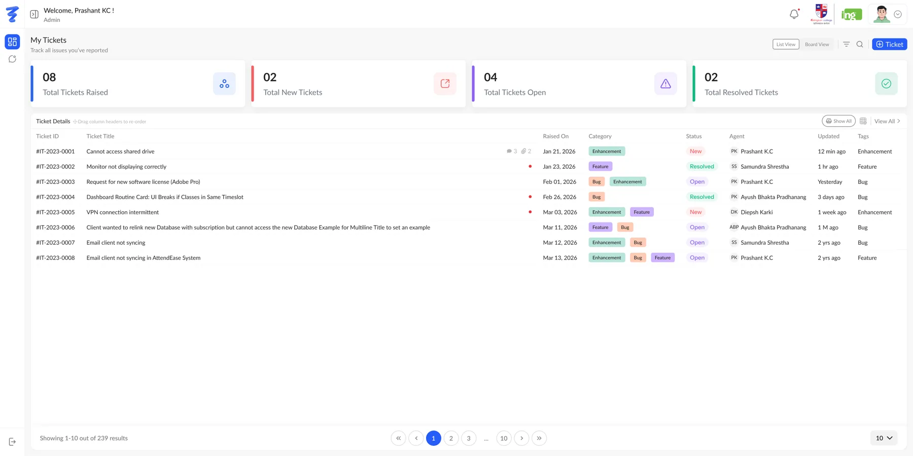
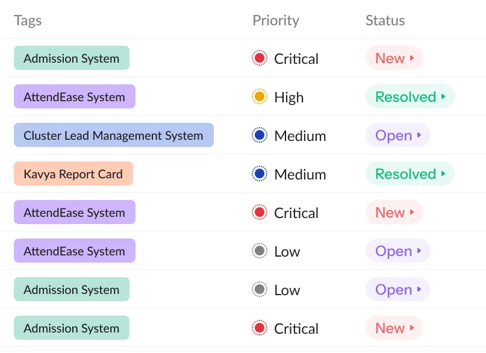
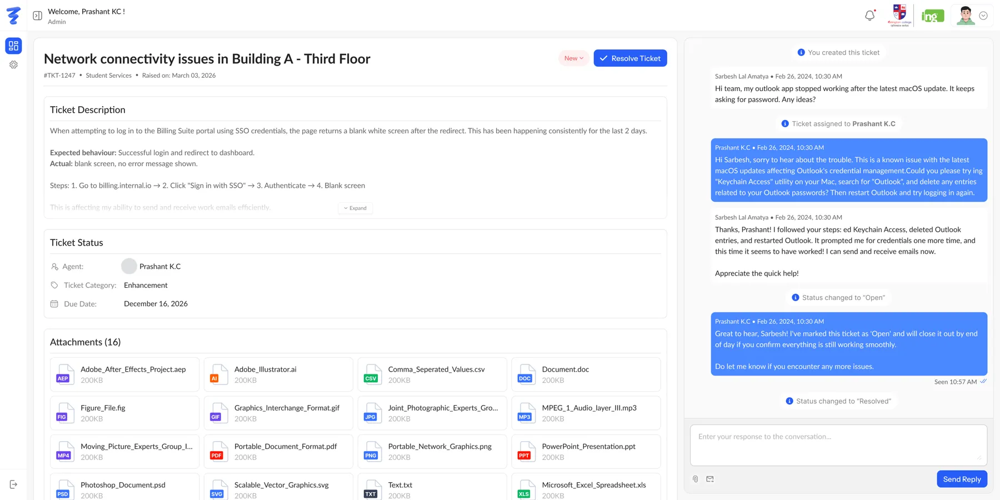
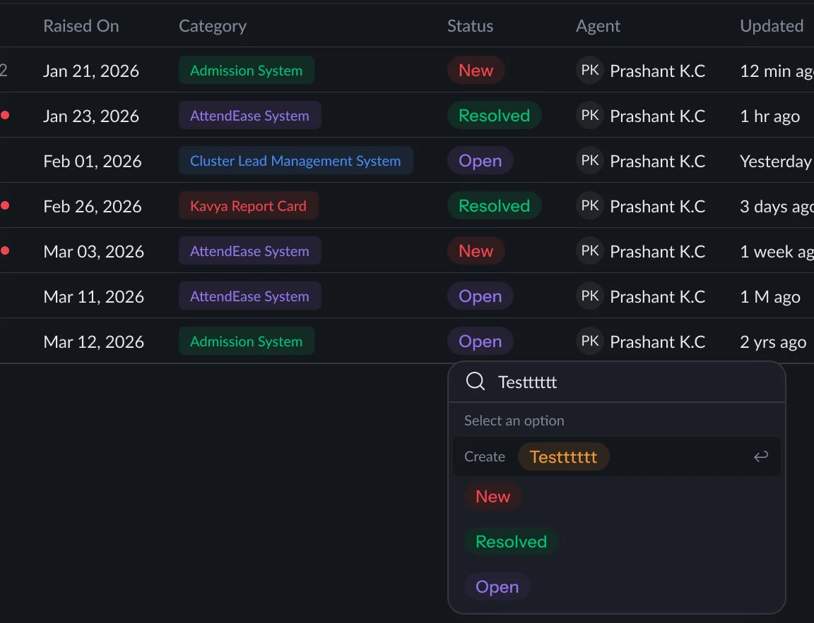
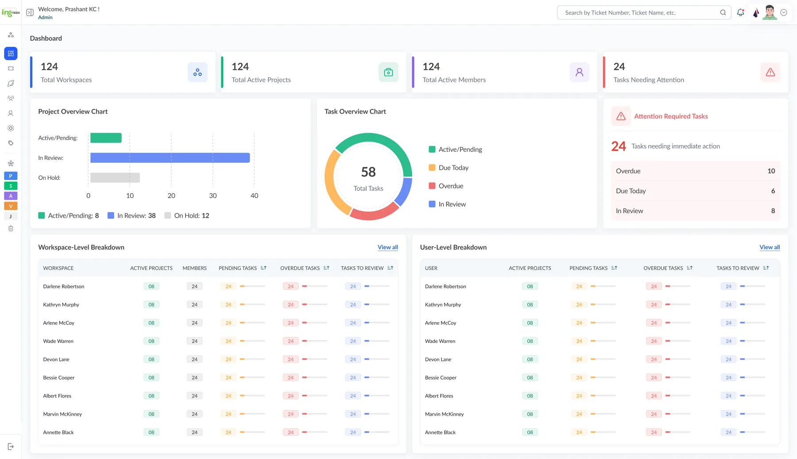
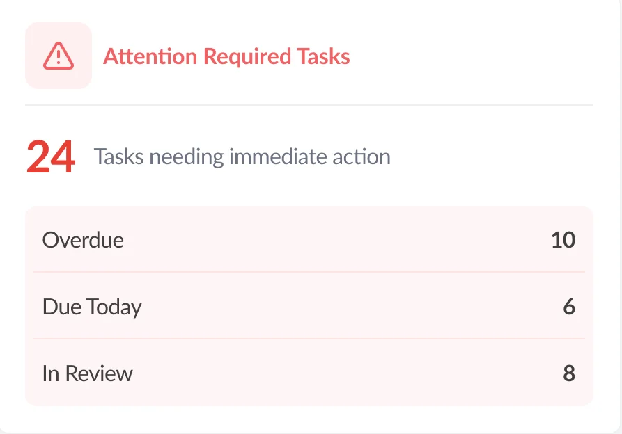
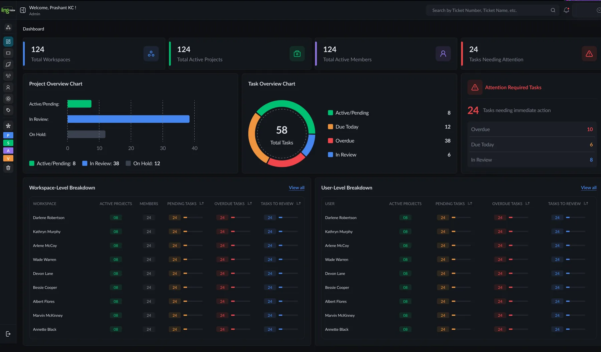
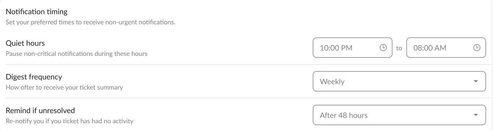

One calm queue for every product the team supports.


Look at the tags in the queue: Admission System, AttendEase, Cluster Lead Management System, Kavya Report Card. These are separate products, and their issues all land in the same place.
That set the job for me. A support agent should be able to tell in one pass which product a ticket belongs to, how urgent it is and where it stands. Nobody should have to open the ticket to find out.
My reading of the screens
Every ticket row shows three signals in a fixed order: which product, how urgent, what state. Each signal has its own shape, so you can scan for one without reading the others.
The ticket page reads like a chat with a paper trail. Replies and system events such as "assigned" and "status changed" sit on one timeline, in the order they happened.
Support work is interrupt-driven already. People decide when the tool can reach them, and anything left unresolved comes back on its own.
The ticket page splits in two. The left side holds the facts of the issue. The right side holds the conversation that resolves it.

Some people work a queue top to bottom. Others think in columns. TicketING offers both views of the same tickets. The four summary cards stay on top in either view, so switching never loses the overall count.
Status uses filled pills and priority uses ringed dots. They never share a shape, so a red "New" and a red "Critical" can't be confused.

You change a ticket's status from the table itself. The dropdown searches the existing states, and if you type one that doesn't exist, it offers to create it on the spot.
Teams rarely agree on one fixed workflow. This lets an admin add a state like "Waiting on vendor" without leaving the queue or going through settings.
The task dashboard looks after the people who manage the work. Workspace and user tables show pending, overdue and to-review counts side by side, with a small bar next to each number.

tasks need immediate action. This number gets its own red panel, split into the three reasons a task is late: 10 overdue, 6 due today and 8 waiting for review.

The figures are sample data from the design file.
Every screen has a dark twin. I kept the layout identical between them and changed only the surfaces. The status and priority colours keep their meaning, toned down so they don't glare against the dark background. Drag across the dashboard to compare.

Settings are about when the tool may interrupt you, not about the product itself. Status changes and replies email you right away. Everything else respects quiet hours.

Each family of colour means one thing. Status colours appear only on state, product tags only on product, and blue only on actions.
red · needs an ownerviolet · in progressgreen · donemintlilacperiwinklepeachcategorycategorycategoryprimary actionOne honest overlap: the category chips reuse the product tag palette, with Enhancement in mint just like Admission System. I'll come back to this in the reflection.
The foundation does its job: three signals, two views, one thread. Looking at the screens again, these are the next steps I'd take.